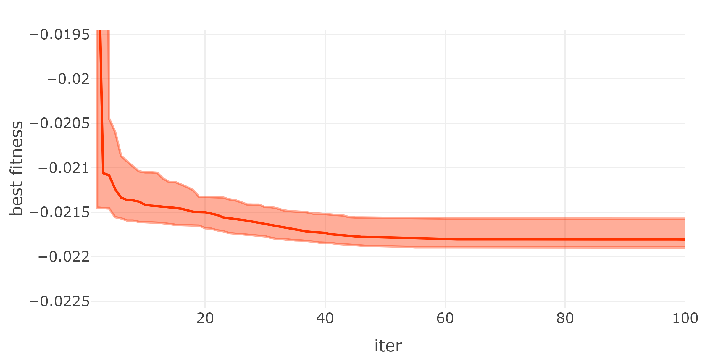
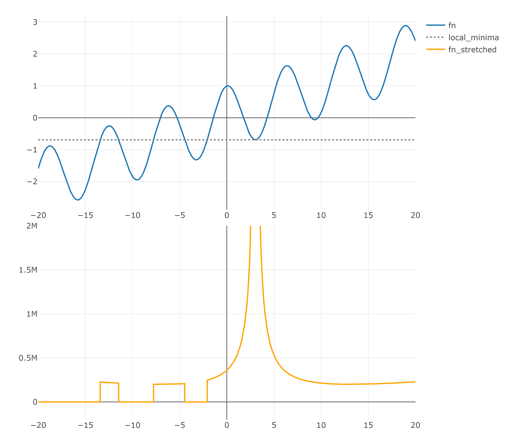

Chapter 8 PSO Variations
The standard PSO analysed in the previews chapter is capable to solve a wide range of problems but is very slow and often gets stuck in local minima. This chapter analyses different variations of the standard PSO in finance related problems. The first variant is the PSO with functional stretching, which should reduces stagnation in local minimas. ……………
8.0.1 Testproblem: Discrete ITP-MSTE
All variations are tested on a discrete ITP-MSTE to track the S&P 500 with a tracking portfolio consisting of the top 50 assets in the S&P 500. The daily data to solve the ITP is from 2018-01-01 till 2019-12-31 and the assets need to be present in the S&P 500 at the end of the time frame and have none missing values. The top 50 assets are selected by solving a continuous ITP-MSTE with a solve.QP() approach and the assets with the 50 highest weights are choosen. The tracking portfolio is discrete and has a net asset value of ten thousand USD. The tracking portfolio gets discretized by the closing prices on 2019-12-31 and the returns are calculated as simple returns from adjusted closing prices. The maximal weight for each asset is 10% to decrease the dimensional space of the problem. Additional constraints are long only and the portfolio weights \(w\) should satisfy \(1 \leq \textstyle\sum w_i \geq 0.99\). All variations are run 100 times and compared to 100 runs of the standard PSO function created in the previews chapter. The swarm size for the PSO and all variations is 100 and the iterations are set to 50.
The next chart analyses the behavior of the 100 standard PSO runs in each iteration, by plotting the median best fitness reached at each iteration. The confidence bands for the 95% and 5% quantiles of the best fitnesses are plotted in the same color as the median with less transparency:
nav <- 10000
from <- "2018-01-01"
to <- "2019-12-31"
spx_composition <- buffer(
get_spx_composition(),
"AS_spx_composition"
)
pool_data <- buffer(
get_yf(
tickers = spx_composition %>%
filter(Date<=to) %>%
filter(Date==max(Date)) %>%
pull(Ticker),
from = from,
to = to
),
"AS_sp500_asset_data"
)
pool_data$returns <-
pool_data$returns[, colSums(is.na(pool_data$returns))==0]
pool_data$prices <- pool_data$prices[, colnames(pool_data$returns)]
bm_returns <- buffer(
get_yf(tickers = "%5EGSPC", from = from, to = to)$returns,
"AS_sp500"
) %>% setNames(., "S&P 500")
pool_returns <- pool_data$returns
mat <- list(
Dmat = t(pool_returns) %*% pool_returns,
dvec = t(pool_returns) %*% bm_returns,
Amat = t(rbind(
rep(1, ncol(pool_returns)), # sum up to 1
diag(1,
nrow=ncol(pool_returns),
ncol=ncol(pool_returns)) # long only
)),
bvec = c(
1, # sum up to 1
rep(0, ncol(pool_returns)) # long only
),
meq = 1
)
# search 100 best tickers
qp <- solve.QP(
Dmat = mat$Dmat, dvec = mat$dvec,
Amat = mat$Amat, bvec = mat$bvec, meq = mat$meq
)
sub_ticker <- colnames(pool_returns)[order(qp$solution, decreasing = T)[1:50]]
pool_data$returns <- pool_data$returns[, sub_ticker]
pool_data$prices <- pool_data$prices[, sub_ticker]
prices <- last(pool_data$prices)
mat <- list(
Dmat = t(pool_data$returns) %*% pool_data$returns,
dvec = t(pool_data$returns) %*% bm_returns,
Amat = t(rbind(
rep(1, ncol(pool_data$returns)), # sum up to 1
diag(1,
nrow=ncol(pool_data$returns),
ncol=ncol(pool_data$returns)) # long only
)),
bvec = c(
1, # sum up to 1
rep(0, ncol(pool_data$returns)) # long only
),
meq = 1
)
calc_fit <- function(x){
as.numeric(0.5 * t(x) %*% mat$Dmat %*% x - t(mat$dvec) %*% x)
}
calc_const <- function(x){
const <- t(mat$Amat) %*% x - mat$bvec
const[mat$meq] <- -pmax(0, abs(const[mat$meq]+0.005)-0.005)
sum(pmin(0, const)^2)
}
set.seed(0)
df_SPSO <- NULL
for(i in 1:100){
res_SPSO_time <- system.time({
res_SPSO <- pso(
par = rep(0, ncol(pool_data$returns)),
fn = function(x){
x <- as.vector(round(x*nav/prices)*prices/nav)
fitness <- calc_fit(x)
constraints <- calc_const(x)
return(fitness+10*constraints)
},
lower = 0,
upper = 0.1,
control = list(
s = 100, # swarm size
c.p = 0.5, # inherit best
c.g = 0.5, # global best
maxiter = 50, # iterations
w0 = 1.2, # starting inertia weight
wN = 0, # ending inertia weight
save_fit = T # save more information
)
)
})
df_SPSO <- rbind(df_SPSO,
data.frame(
"run" = i,
suppressWarnings(rbind(data.frame(
"type" = "PSO", "time"=res_SPSO_time[3], res_SPSO$fit_data %>% select(iter, "mean_fit"=mean, "best_fit"=best)
)))
)
)
}
df_res <- df_SPSO %>%
group_by(iter, type) %>%
summarise(time_mean=mean(time), best_fit_q1 = quantile(best_fit, 0.05), best_fit_q3 = quantile(best_fit, 0.95), best_fit_mean = mean(best_fit), best_fit_median = quantile(best_fit, 0.5)) %>%
ungroup()
plot_ly() %>%
add_trace(data = df_res, x=~iter, y=~best_fit_median, name = "PSO", mode="lines", type = 'scatter', line = list(color="rgba(255, 51, 0, 1)")) %>%
add_trace(data = df_res, x=~iter, y=~best_fit_q1, name = "PSO_q1", mode="lines", type = 'scatter', line = list(color="rgba(255, 51, 0, 0.4)"), showlegend=F) %>%
add_trace(data = df_res, x=~iter, y=~best_fit_q3, name = "PSO_q3", mode="lines", type = 'scatter', fill="tonexty", line = list(color="rgba(255, 51, 0, 0.4)"), fillcolor = "rgba(255, 51, 0, 0.4)", showlegend=F) %>%
layout(yaxis=list(range=c(min(df_res[df_res$iter>3,]$best_fit_q3)-0.001, max(df_res[df_res$iter>3,]$best_fit_q3)+0.001), title="best fitness")) %>%
html_save()
The aggregated statistics of the last iterations of all 100 runs can be found in the table below:

8.1 Function Stretching
(Recent_approaches_to_global_optimization_problems_.pdf)
set.seed(0)
pso_fn_stretching <- function(
par,
fn,
lower,
upper,
control = list()
){
# use default control values if not set
control_ = list(
s = 10, # swarm size
c.p = 0.5, # inherit best
c.g = 0.5, # global best
maxiter = 200, # iterations
w0 = 1.2, # starting inertia weight
wN = 0, # ending inertia weight
save_fit = F, # save more information
fn_stretching = F
)
control <- c(control, control_[!names(control_) %in% names(control)])
fn1 <- function(pos){fn(pos)}
# init data-structure
X <- mrunif(
nr = length(par), nc=control$s, lower=lower, upper=upper
)
if(all(!is.na(par))){
X[, 1] <- par
}
X_fit <- apply(X, 2, fn1)
V <- mrunif(
nr = length(par), nc=control$s,
lower=-(upper-lower), upper=(upper-lower)
)/10
P <- X
P_fit <- X_fit
p_g <- P[, which.min(P_fit)]
p_g_fit <- min(P_fit)
trace_fit <- NULL
for(i in 1:control$maxiter){
# move particles
V <-
(control$w0-(control$w0-control$wN)*i/control$maxiter) * V +
control$c.p * runif(length(par)) * (P-X) +
control$c.g * runif(length(par)) * (p_g-X)
X <- X + V
# set velocity to zeros if not in valid space
V[X > upper] <- 0
V[X < lower] <- 0
# move into valid space
X[X > upper] <- upper
X[X < lower] <- lower
# evaluate objective function
X_fit <- apply(X, 2, fn1)
# save new previews best
P[, P_fit > X_fit] <- X[, P_fit > X_fit]
P_fit[P_fit > X_fit] <- X_fit[P_fit > X_fit]
# save new global best
if(any(P_fit < p_g_fit)){
p_g <- P[, which.min(P_fit)]
p_g_fit <- min(P_fit)
}
if(control$fn_stretching && as.numeric(i/control$maxiter/0.1) %% 1 == 0){
fn1 <- function(pos){
res <- fn(pos)
G <- res + 1.5 * sqrt(sum((pos - p_g)^2)) * (sign(res - p_g_fit) + 1)
H <- G + 0.5 * (sign(res - p_g_fit) + 1)/(tanh(0.1 * (G - p_g_fit)))
return(H)
}
}
if(control$save_fit){
trace_fit <- rbind(trace_fit, data.frame("iter"=i, "mean_fit" = mean(P_fit), "best_fit" = p_g_fit))
}
}
res <- list(
"solution" = p_g,
"fitness" = p_g_fit
)
if(control$save_fit){
res$trace_fit <- trace_fit
}
return(res)
}
df <- NULL
for(i in 1:100){
res_pso_fns_time <- system.time({
res_pso_fns <- pso_fn_stretching(
par = rep(0, ncol(pool_data$returns)),
fn = function(x){
x <- as.vector(round(x*nav/prices)*prices/nav)
fitness <- calc_fit(x)
constraints <- calc_const(x)
return(fitness+10*constraints)
},
lower = 0,
upper = 0.1,
control = list(
s = 100, # swarm size
c.p = 0.5, # inherit best
c.g = 0.5, # global best
maxiter = 50, # iterations
w0 = 1.2, # starting inertia weight
wN = 0, # ending inertia weight
fn_stretching = T,
save_fit = T
)
)
})
df <- rbind(df,
data.frame(
"run" = i,
suppressWarnings(data.frame(
"type" = "PSO-fnS", "time"=res_pso_fns_time[3], res_pso_fns$trace_fit %>% select(iter, mean_fit, best_fit)
))
)
)
}
df_res <- rbind(df_SPSO, df) %>%
#mutate(best_fit = best_fit +1) %>%
group_by(iter, type) %>%
summarise(time_mean=mean(time), best_fit_q1 = quantile(best_fit, 0.05), best_fit_q3 = quantile(best_fit, 0.95), best_fit_mean = mean(best_fit), best_fit_median = quantile(best_fit, 0.5)) %>%
ungroup()
plot_ly() %>%
add_trace(data = df_res %>% filter(type=="PSO"), x=~iter, y=~best_fit_median, name = "PSO", mode="lines", type = 'scatter', line = list(color="rgba(255, 51, 0, 1)")) %>%
add_trace(data = df_res %>% filter(type=="PSO"), x=~iter, y=~best_fit_q1, name = "PSO_q1", mode="lines", type = 'scatter', line = list(color="rgba(255, 51, 0, 0.4)"), showlegend=F) %>%
add_trace(data = df_res %>% filter(type=="PSO"), x=~iter, y=~best_fit_q3, name = "PSO_q3", mode="lines", type = 'scatter', fill="tonexty", line = list(color="rgba(255, 51, 0, 0.4)"), fillcolor = "rgba(255, 51, 0, 0.4)", showlegend=F) %>%
add_trace(data = df_res %>% filter(type=="PSO-fnS"), x=~iter, y=~best_fit_median, name = "PSO-fnS", mode="lines", type = 'scatter',line = list(color="rgba(0, 102, 204, 1)")) %>%
add_trace(data = df_res %>% filter(type=="PSO-fnS"), x=~iter, y=~best_fit_q1, name = "PSO-fnS_q1", mode="lines", type = 'scatter', line = list(color="rgba(0, 102, 204, 0.3)"), showlegend=F) %>%
add_trace(data = df_res %>% filter(type=="PSO-fnS"), x=~iter, y=~best_fit_q3, name = "PSO-fnS_q3", mode="lines", type = 'scatter', fill="tonexty", line = list(color="rgba(0, 102, 204, 0.3)"), fillcolor = "rgba(0, 102, 204, 0.3)", showlegend=F) %>%
layout(yaxis=list(range=c(min(df_res[df_res$iter>3,]$best_fit_q3)-0.001, max(df_res[df_res$iter>3,]$best_fit_q3)+0.001), title="best fitness")) %>%
html_save()
The aggregated statistics of the last iterations of all 100 runs can be found in the table below:

10.1.1.301.4441.pdf function stretching
Boudt-Wan2020_Article_TheEffectOfVelocitySparsityOnT SV-PSO CV-PSO oh ist nur binary PSO
pso_cardinality_constrained.pdf
DissertationHelwig (1).pdf